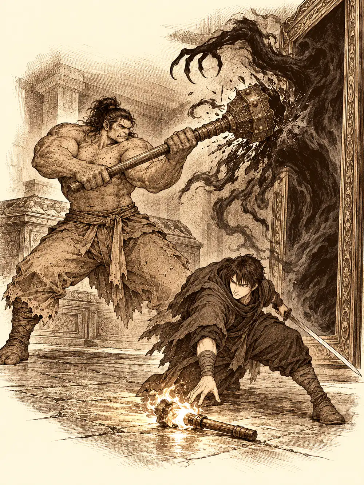

Capítulo 116
Otro templo del culto
Libro VII · La Reina Cuervo
Hacía días que en la base no se comía como es debido. Lo poco que entraba se iba por la puerta en cuanto llegaba: a las aldeas, a los soldados, a quien lo necesitara más. Los cazadores tenían las mejillas hundidas y las piernas pesadas, y se movían como si arrastraran sacos. El hambre no se quejaba en voz alta. Se instalaba en las rodillas y en los párpados.
Jin tenía además una cicatriz nueva que le cruzaba el vientre. Había ido a investigar algo al norte, había vuelto con el torso abierto y le habían salvado la vida, y lo único que contaba de aquel viaje era lo que había encontrado al regresar.
"Sirth está vivo".
Lo dijo con la voz de quien todavía no terminaba de creérselo. Maroxi también había vuelto. Estaba encerrado en una habitación con Gluglu, o con lo que quedaba de él, intentando recomponerlo a partir de lo que había leído en sus libros.
Kurobane, sentado a la mesa, no levantaba la vista de un mapa. Tenía un dedo clavado sobre un punto del sur, muy cerca de la Puerta, y la cabeza en otra parte. Arwen y Shizuka se peleaban por el patio y Gur intentaba separarlas sin mucho éxito, y en algún momento de aquel alboroto Chilia bajó revoloteando, se acercó al ninja y empezó a husmearlo como un perro.
"Hueles a muerto. ¿Qué llevas?".
"Un libro. Huele mal y absorbe magia".
"Quiero verlo".
Kurobane se lo había llevado a Guxi, a su refugio de las montañas, y Guxi le había lanzado sus hechizos para conocerlo. El libro se los había tragado todos. Chilia no se conformó con la explicación. Se sentó delante de él sobre los talones y repitió que quería verlo, quería verlo, quería verlo, y Arwen se sentó a su lado y se puso a repetirlo también.
El ninja suspiró, abrió la capa y sacó un bulto envuelto en tela y atado con cuerda, como un regalo. Al desenvolverlo comprobaron que había crecido desde que Calista se lo había dado. Las letras del título seguían siendo ilegibles.
Gur alargó la mano. Kurobane le advirtió que no lo tocara.
Ya lo había tocado. Se quedó rígido. Por dentro de sus ojos pasó algo que solo él vio: una criatura de piel azul con cuernos, parecida a su sensei pero mucho más grande. Cayó al suelo como un árbol talado.
Arwen se arrancó unas hierbas del pelo, las masticó y le escupió la pasta dorada en la cara. La luz de la curación brilló un instante y se apagó, absorbida por el libro como el agua por la arena. Kurobane volvió a envolverlo deprisa, se lo guardó y dio unos pasos atrás. La niña lo intentó otra vez. Ahora sí. Gur abrió los ojos, se levantó de un salto con la maza en la mano y preguntó quién había sido.
"El libro, Gur. Al tocarlo".
Chilia se inclinó sobre el bulto que asomaba de la capa y leyó el título como quien lee un letrero.
"Biblia Sagrada de Otakemaru".
Nadie más sabía leer aquello. Chilia señaló el símbolo de la tapa: lo había visto, dijo, en unas ruinas que había cruzado de camino. Al este de Sho. Podía llevarlos.
Antes de salir, Arwen desapareció dentro de la base y volvió con platos. En cada uno había trozos de cuervo, crudo y desplumado a medias, repartidos con mucho cuidado: aquí las alas, allí las patas. Era su forma de dar un banquete. Algunos comieron por no hacerle el feo, con una pluma entre los dientes, y notaron que el cuerpo se les aliviaba un poco. No fue el gran festín que la niña imaginaba, pero algo de fuerza devolvió.
Siguieron a Chilia y a Arwen hacia el este, más allá de un bosquecillo, hasta unas ruinas medio enterradas. El mismo símbolo del libro estaba tallado en la piedra. La entrada fue accidentada: en la oscuridad el suelo desapareció bajo los pies de Jin, que se precipitó con estrépito de armadura, y los demás tuvieron que bajar tras él a tientas.
Abajo había una cripta. Nichos en las paredes, una puerta de madera enfrente y, en el centro, un cuenco vacío rodeado de inscripciones. Chilia había cogido una calavera del suelo y le metía la mano por detrás para hacerla hablar, presentándosela a Arwen como Paliducho. Después se acercó al cuenco y leyó las letras, escritas en la lengua del abismo.
"Pone que hay que meter la muerte dentro".
Gur cogió la calavera y la dejó en el cuenco. La puerta se abrió.
Al otro lado los esperaba un pasillo y, en cuanto pusieron un pie en él, una lluvia de dardos les salió de los costados. Jin y Gur se los arrancaron de la carne. Gur pensó que le había picado una avispa. Arwen se rio de ellos, juntó las manos, levantó una corriente de viento y les gritó que se dejaran llevar. El viento los arrastró por el pasillo como hojas secas, por encima de las trampas, y los estampó unos contra otros y contra la puerta del fondo, que cedió.
Alguno se quedó con el brazo colgando sobre el vacío.
Estaban en una plataforma suspendida sobre una oscuridad sin fondo. No había paredes, solo bordes, y más allá otras plataformas, puertas a lo lejos y los símbolos del culto pintados donde alcanzaba la vista.
Se dividieron. En cada sala había palancas, y cada palanca hacía algo distinto: unas abrían puertas y otras las cerraban, y algunas despertaban a los muertos. Chilia y Arwen tiraban de ellas por el gusto de tirar. Jin y Kurobane, por intentar entender la lógica. De los sarcófagos salían esqueletos con arcos y zombis que se caían de sus propias tumbas, y el ninja y el guerrero los iban despachando sin demasiado esfuerzo.
Gur, en cambio, se quedó solo frente a una puerta que se le cerraba en las narices cada vez que estaba a punto de cruzarla. Se peleó con un zombi y con un esqueleto que salieron a hacerle compañía, los deshizo a golpes y siguió esperando, cada vez de peor humor. Cuando la puerta se le cerró por tercera vez, lanzó un bramido que retumbó en toda la cripta y le clavó tres jabalinas.
"¿Dónde estabais?".
"Peleando con monstruos y tocando las palancas".
"Me cerrasteis la puerta en la cara".
Al final dieron con la combinación y se reunieron ante una última puerta flanqueada por dos soportes vacíos. Intentaron encenderlos con la antorcha de Jin. Las llamas se apagaban al instante.
"Hacen falta dos llamas azules", dijo alguien. Las había, en algún sitio.
Jin y Gur entraron en una sala de sarcófagos con un espejo enorme en un lateral. Gur se puso a recomponer un esqueleto que encontró desparramado, porque, decía, así desordenados los muertos no podían descansar. Jin evitaba mirar el espejo por razones que no explicó, y aun así acabó asomándose.
En el reflejo, en mitad de la sala, ardía una antorcha de fuego azul. En la sala de verdad no había nada.
Fue hacia atrás sin perder de vista el espejo e intentó coger la antorcha. Su mano se cerró en el aire. Y en el reflejo vio una sombra, una garra, que se acercaba despacio a la llama. Golpearon el espacio vacío. Apagaron las luces. Nada cambiaba.
Gur se hartó y golpeó el espejo.

No se rompió. Giró sobre sí mismo como una puerta. Del cristal salió volando la antorcha azul, que se estrelló contra la pared y siguió ardiendo, y detrás de ella salió también la sombra. Gur la recibió con la maza: un golpe, otro, otro más, hasta que la cosa quedó partida por la mitad en el suelo y no volvió a levantarse. Jin cogió la antorcha.
En otra sala, Arwen había encontrado un botón rojo sobre un altar, en el centro de un círculo de antorchas. Lo pulsó. Las antorchas se fueron apagando una a una, cada pocos segundos, todo alrededor, hasta que se encendió una en el centro y el suelo tembló. El altar bajó unos centímetros. Lo pulsó otra vez. Y otra. Chilia aplaudía. Con cada pulsación el altar se hundía un poco más, girando como una moneda que se enrosca, hasta que se encajó en el suelo y el botón desapareció por un agujero. Arwen pegó la oreja. Notó calor. De la abertura subió un pedestal con una antorcha de fuego azul.
La niña la cogió con las dos manos.
Cuando llevaron las dos llamas a los soportes, el fuego pasó de las antorchas a la piedra y la puerta se abrió. Arwen se quedó mirando el palo apagado que le quedaba en la mano y se lo guardó en el pelo.
Detrás había pasarelas, y en las pasarelas placas que soltaban un gas que quemaba la garganta. Gur pisó una y salió envuelto en una nube. Chilia pisó otra a propósito para ver qué pasaba.
Y había dos oni.
Chilia agarró a Arwen y la lanzó contra uno como quien lanza una piedra. El oni la atrapó en el aire por la cabeza. La niña le dijo que olía a muerto, como Paliducho, juntó las manos, y de ellas brotó una luz que hizo que el mundo se diera la vuelta: la gravedad se invirtió y la niña y el oni empezaron a flotar hacia el techo, todavía enganchados. Kurobane golpeó al monstruo desde abajo. Chilia saltó tras él, lo agarró y lo estampó contra el suelo hasta chafarlo. Arwen quedó libre, flotando y riéndose.
Jin y Gur se encargaron del otro. Lo hirieron entre los dos y fue Jin quien lo remató.
Kurobane se quedó mirando los cuerpos. Aquel no era el oni que había visto junto a los samuráis transformados, sino uno distinto.
Después del combate, el ninja se elevó por encima de la sala con intención de buscar algo que delatara al culto. No llegó a mirar. Algo dentro de él le giró la cabeza hacia uno de los sarcófagos, uno que estaba medio abierto, y una voz le dijo una sola palabra.
Cógelo.
La reconoció.
Bajó caminando por el aire como quien baja una escalera y se volvió hacia sus compañeros.
"Estad atentos, por favor. No sé si voy a poder aguantar".
Uno de sus ojos se había vuelto negro por completo. La oscuridad le bajó del ojo al brazo y del brazo a la mano izquierda, y con esa mano empujó la tapa del sarcófago. La tapa salió volando.
Dentro había un estoque. El filo era negro, sin un solo brillo, tan opaco que parecía tragarse la luz de las antorchas. Kurobane lo cogió, guardó el suyo y probó unos movimientos en el aire: una estocada, un corte en cruz. Preguntó en silencio qué era aquello y de dónde venía. La voz no contestó.
Gur, mientras tanto, había encontrado en el suelo unas marcas parecidas a las que el culto usaba para invocar. Las restregó con el pie, emborronando los trazos con la sangre seca que había por allí, hasta que una parte quedó ilegible. Los hombres de las máscaras, los que se suponía que tenían que perseguir, no aparecieron por ninguna parte.
Cuando volvieron a reunirse, la voz de Kurobane sonaba más grave. Quienes eran sensibles a la magia vieron una especie de aura que le subía desde su propia sombra.
"Hemos encontrado algo mejor", dijo.
Chilia lo miró de cerca. "Estás afónico. Deberías beber más agua". Agarró a Arwen y salió corriendo con ella hacia la salida.
Jin se acercó al ninja. "Cuando volvamos a casa, tenemos que hablar". Al oír su nombre, Kurobane se giró. Uno de sus ojos era rojo y decía que cuando quisiera. El otro era un pozo.
Volvieron hacia Sho con la noche encima. Arwen iba con la boca abierta tragándose los mosquitos que le daban en la cara, porque así se quitaba el hambre.
Archi pasó aquellos días en los tejados. En Ukio instaló sobre la base una placa de cuarzo para que la señal de las piedras de comunicación llegara más lejos, la golpeó hasta sacarle chispas y llamó a Guxi. El artífice le contestó desde el puerto de Sho y se oyeron el uno al otro con toda claridad durante un momento. Después llegaron los pitidos, una música que nadie tocaba, un siseo como de lluvia, y la placa empezó a echar humo y se rompió.
Guxi estaba construyendo un barco. Kurobane se enteró por Calista de que necesitaba ayuda, escondió el libro en su refugio y se fue al puerto a cargar planchas de metal junto a los pequeños constructos del artífice. Guxi tenía prisa: tenía que terminar al día siguiente para llegar a la isla Espejismo, una isla legendaria que solo se dejaba encontrar ciertos días del mes. Mientras trabajaban, le reconoció a Kurobane que estaba aprendiendo a apoyarse en otros y le pidió que lo llamara amigo. El ninja aceptó, y le aclaró que él tampoco pertenecía oficialmente a los cazadores.
Durante la comida, Guxi le contó la historia de su maestro, y algunas piezas no encajaban. Dijo que el maestro había tenido dos alumnos. Cuando quiso nombrar al segundo, no le salió el nombre. Se concentró. Siguió sin salirle. Volvió al relato como si nada.
Archi llegó por la tarde colgado de Ralph, su ayudante mecánico, y se pasó horas ayudando con el casco y los cañones. A dos de ellos les añadió unos relieves de forma muy poco decorosa.
En la base, Calista llegó agotada y cargada de papeles. Se presentó a Jin como cortesana y emisaria del rey dragón, y aceptó su oferta de ayudarla con el papeleo cuando terminaran de arreglar los destrozos. Gur y Shizuka habían llegado con tablones para reparar lo que habían roto. Banzo entró con Danifae. La había encontrado en los barrios bajos y la había convencido de hablar con él en un lugar menos hostil.
Le contó que las marcas que compartía con Calista lo unían a su madre, y que Brythya le había encomendado ayudar a Danifae a recuperar las esferas. Dijo que no se creía una palabra de esa mujer, pero que estaba dispuesto a colaborar para que las obtuvieran y se marcharan, siempre que nadie estorbara la lucha contra Otakemaru ni hiciera daño a los demás. Danifae lo escuchó con un brillo de triunfo en los ojos y luego rechazó sus condiciones. No aceptaba órdenes de un varón. Seguiría haciendo lo que quisiera, mientras él la ayudaba. Banzo asintió y sonrió, y en ese momento los interrumpieron.
Danifae pidió a Banzo seguir hablando fuera. Antes de salir, la drow se inclinó ante Calista en una reverencia de aparente sumisión y le pidió disculpas. Calista las rechazó sin disimular el desprecio. Banzo bajó la cabeza y siguió a Danifae fuera.